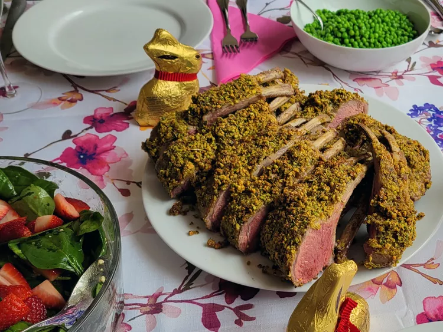

Pistachio-Crusted Rack of Lamb

This pistachio-crusted rack of lamb has an interesting flavor and texture. A rack of lamb may be a little pricey but no more so
than other special-occasion meats like prime rib, beef tenderloin, or goose. And because it's sold completely trimmed, you'll have virtually no waste.
Ingredients
- 2 racks of lamb, trimmed
- 1 teaspoon herbes de Provence
- salt and ground black pepper to taste
- 1 tablespoon vegetable oil
- ⅔ cup chopped pistachio nuts
- 2 tablespoons dry bread crumbs
- 1 tablespoon melted butter
- 1 teaspoon olive oil
- 3 tablespoons Dijon mustard
Directions
Step 1
- Preheat the oven to 400 degrees F (200 degrees C). Line a baking sheet with aluminum foil.
Step 2
- Generously season each rack of lamb with herbes de Provence, salt, and pepper.
Step 3
- Heat vegetable oil in a large skillet over high heat. Place lamb into the skillet and cook until browned on all sides, 6 to 8 minutes. Transfer to the prepared baking sheet.
Step 4
- Stir pistachios, bread crumbs, melted butter, and olive oil together in a small bowl; season with salt and pepper. Spread mustard over the fatty side of lamb, then press pistachio mixture into mustard.
Step 5
- Bake in the preheated oven until crust is golden and lamb is pink in the center, 20 to 25 minutes. An instant-read thermometer inserted into the center should read at least 130 degrees F (54 degrees C) for medium doneness.
Step 6
- Transfer lamb to a plate and let rest for 10 minutes before slicing.
Home